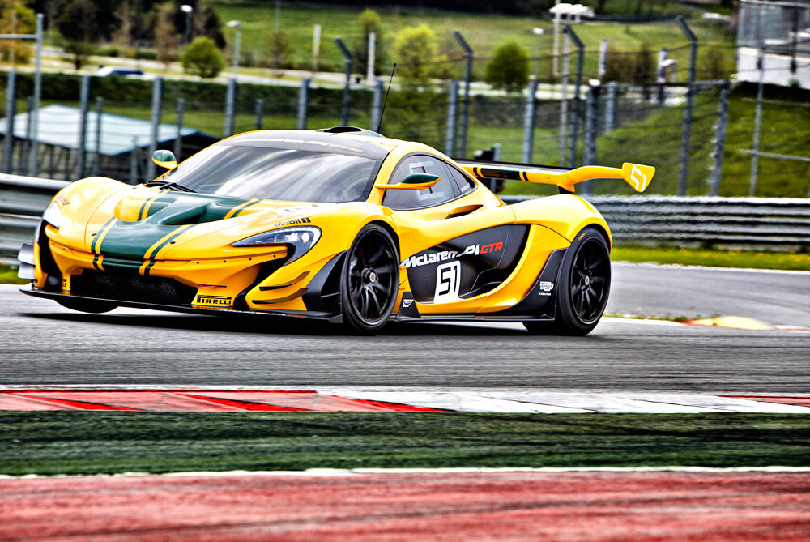

MacLaren P1
Английская компания «McLaren» была основана новозеландским гонщиком Брюсом Маклареном в 1963 году. Первые гоночные шаги были осуществлены на соревнованиях в Тасмании, где Макларен сумел добиться определенного результата, но более важным стало первое полевое испытание болида, созданного компанией.

 Это ссылка на википедию!
Описания MacLaren
Это ссылка на википедию!
Описания MacLaren